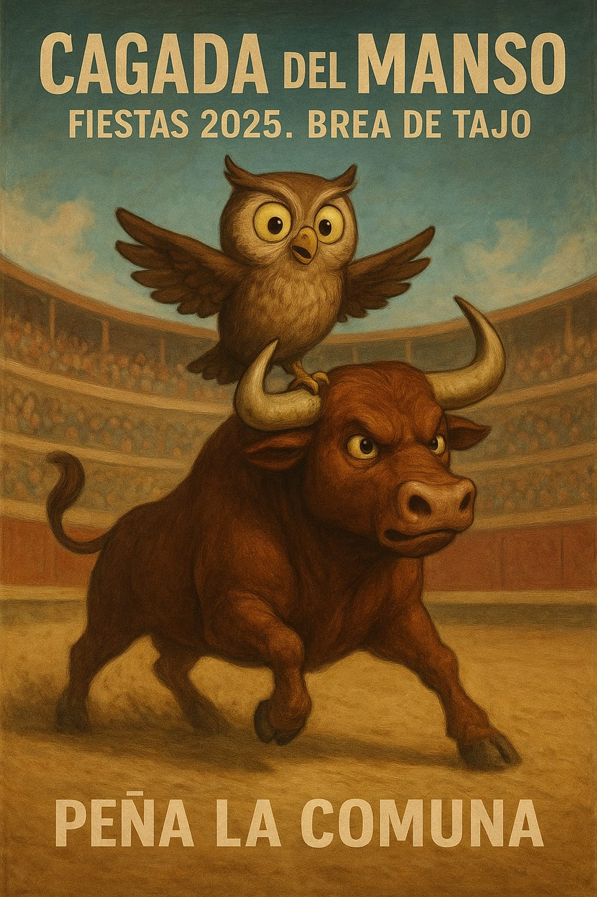

¡GRAN PREMIO!
Sáb, 11 Octubre | 10:00h
La Cagada del Manso
El gran acontecimiento de las fiestas en la plaza de toros de Brea de Tajo. Compra tu parcela, tienta a la suerte y llévate el gran premio en metálico si el manso hace su depósito en tu casilla.